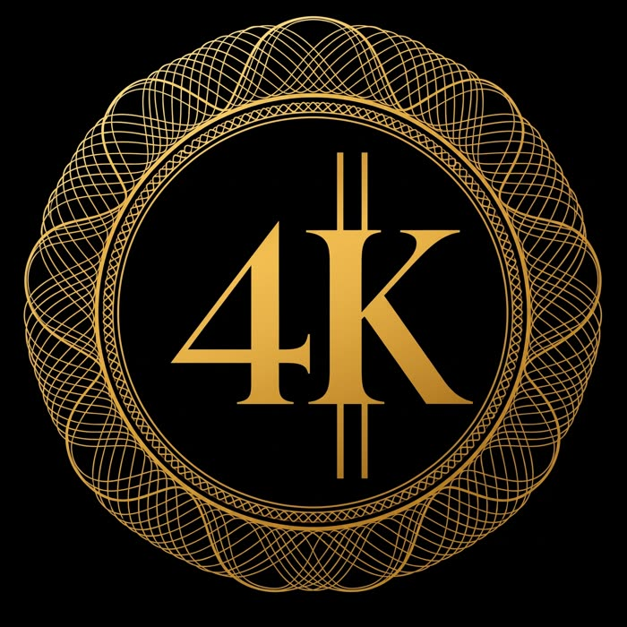
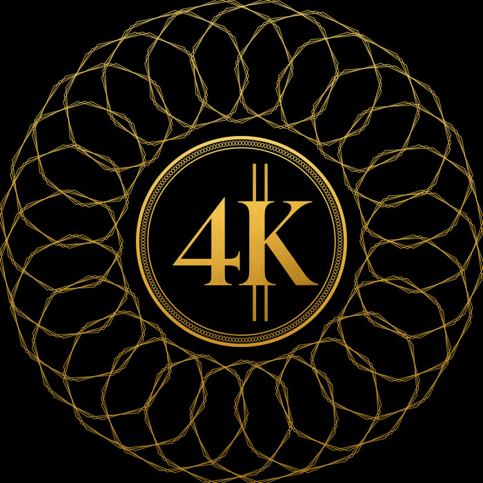

ZOVU · logo z generatora do wektora
Klient przyszedł z pomysłem wygenerowanym w ChatGPT i chciał go mieć naprawdę — w wektorze, w druku, na aucie i na koszulce. Poniżej obie wersje obok siebie, w tej samej skali.


Automatyczna wektoryzacja obrysowuje piksele — łącznie z ich błędami. Wychodzi plik, który jest wektorem tylko z nazwy: setki punktów kontrolnych, krzywe drżące tam, gdzie generator drżał, i litery, których nie da się poprawić bez rysowania od zera. Widać to dopiero na dużym formacie, czyli zwykle po zapłaceniu za druk.
Rozetę wyżej zbudowałem od podstaw jako figurę geometryczną, a nie odrys. Dlatego można ją teraz zagęścić, rozrzedzić albo zmienić liczbę pętli jednym parametrem, a nie przerabiając plik.
Rozumiem, skąd ono się bierze w ogłoszeniu, i traktuję je poważnie. Polskie prawo autorskie chroni utwór jako przejaw działalności człowieka. Grafika wyjęta wprost z generatora ma tu status niepewny, a przy zgłoszeniu znaku towarowego niepewność jest dokładnie tym, czego nie chcemy.
Kiedy znak jest narysowany ręką od nowa, powstaje utwór z konkretnym autorem — i wtedy jest co przenieść na klienta. W umowie przez Useme przenoszę majątkowe prawa autorskie do projektu i podpisuję oświadczenie, że jest wykonany samodzielnie.
Nie jestem prawnikiem i tak to mówię. Jeśli logo ma iść do rejestracji w Urzędzie Patentowym, warto dodatkowo zapytać rzecznika patentowego — również o badanie, czy podobny znak nie jest już zarejestrowany. To jest osobna rzecz od praw autorskich i osobna od mojej roboty.
ZOVU — Katowice. Realizacja: 4K, serwis samochodowy — zovupl.github.io/4K
Strona zrobiona pod jedno zapytanie, nie jest nigdzie linkowana.
{kind=link}